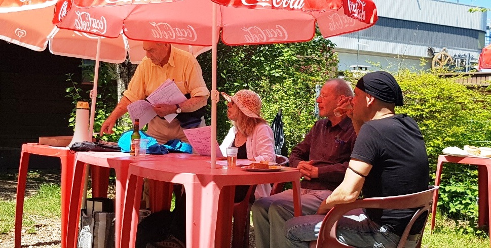
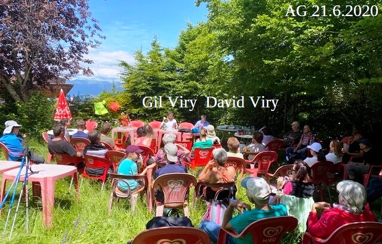
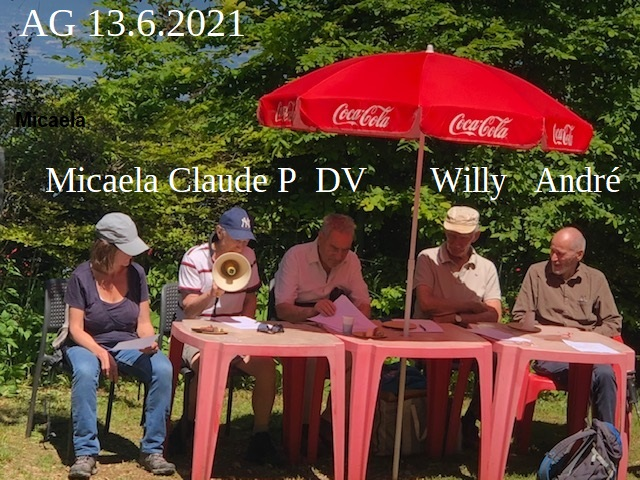
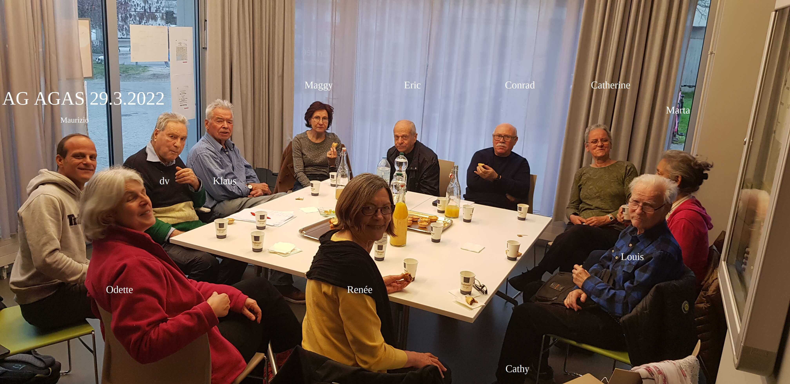
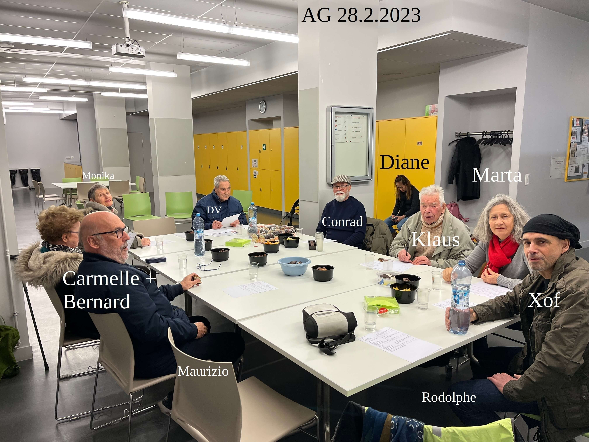

Association genevoise des amis du Salève
A G A S
Association genevoise des amis du Salève
A G A S

Rapports annuels: De 2019 à ce jour
Sur cette page (extraits):
2019, Photo assemblée générale (AG) |
2020, Photo AG |
2021, Photo AG |
2022, Photo AG |
2023, Photo AG
Séparés:
2024 |
2025
Extrait du rapport annuel de l'année 2019
Comité: Président: David Viry. Membres: André Mabillard, Georges Fleury, Willy Gay. Vérificateurs des comptes: Dorith Fohry, Karine Kirchner.
Pendant la première moitié de l'hiver et jusqu'au le 3e dimanche de janvier, nous montons, en principe, le Pas de l'Échelle et le Petit Salève vers la gauche et la Grande Gorge et l'Orjobet à droite. Pendant la deuxième moitié de l'hiver, après la période de la chasse, nous montons en plus le Funiculaire, le Bois Mouton et la Sauge vers la gauche.
Je tiens ici à remercier tous les animateurs (= accompagnateurs bénévoles = accompagnants = encadrants) qui acceptent d'animer la marche (Odette, Rodolphe, Monika etc..).
- Le 6.1.2019 le ciel est gris et sec. Nous sommes 23 dont 2 nouveaux. 7 personnes montent le Pas de l'Échelle (PE). 10 personnes montent la Grande Gorge (GG). 6 personnes montent le Funiculaire (ce sentier est la limite pour la chasse).
-
Le 13.1, le ciel est gris et sec (pluie annoncée). Nous sommes 4 dont 1 nouveau. Nous montons le Pas de l'Échelle.
-
Le 20.1 le ciel est gris et sec (pluie et neige annoncées). Un peu de glace là-haut. Nous sommes 13 dont 2 nouveaux. 3 personnes montent le Pas de l'Échelle. 2 le Petit Salève (sur le Petit Salève, on ne chasse que le matin le dimanche). 2 la Grande Gorge. 6 le sentier d'Orjobet. Odette est la seule à mettre des crampons.
-
Le 27.1 il fait gris et sec jusqu'à 13h puis pluie fine (1/10) (pluie et neige annoncées). Lift fermé car vent. 10 personnes (3 nouveaux) montent le Petit Salève via Monnetier. Ils descendent par les Eaux-belles.
-
Le 24.3 il fait beau. Nous sommes 54 dont 19 nouveaux. 31 personnes montent le Pas de l'Échelle dont 3 au-dessus du tunnel. 8 personnes montent la Grande Gorge (GG). 10 personnes montent le sentier d'Orjobet (Orj). 5 le Petit Salève.
-
Le 14.4 il fait beau et froid. Nous sommes 40 dont 14 nouveaux. 24 personnes montent le Pas de l'Échelle. 6 personnes montent la Grande Gorge (GG). 10 personnes montent le sentier d'Orjobet (Orj) (4 par la Corraterie et 4 par la crête, 2 par la Bouillette).

-
L'Assemblée Générale du 2 juin 2019 a eu lieu sur le gazon à côté du Chalet Snack-bar à la station supérieure du téléphérique du Salève, en présence de 33 membres sur les 123 inscrits (50 hommes et 73 femmes) ainsi que d'une dizaine de sympathisants (24 membres montent par le Pas de l'Échelle ainsi que 26 non membres). Il fait beau. Le jus de fruits a beaucoup de succès, le fromage et la viande sèche aussi. Emma Wincker a donné lecture (au micro) des rapports du président et du trésorier, David Viry a donné lecture du rapport des vérificateurs de comptes. Les 3 rapports ont été approuvés à l'unanimité. Les quatre membres sortants du comité de l'AGAS ont été réélus ainsi que les deux vérificatrices de comptes qui se sont représentées et ont aussi été réélues. André Mabillard remercie DV pour son dévouement ainsi que les personnes référant qui accompagnent le groupe. Un membre demande pourquoi l'AGAS a été exclue de la fête du Salève en 2018. Réponse de DV: poser la question au Syndicat Mixte du Salève.
Dv lit une mise en garde:
"Sur le Salève, il y a plusieurs sentiers dangereux voire très dangereux comme par exemple celui des Voûtes (au Petit Salève), celui des Buis, celui de la Petite Gorge ou celui des Bûcherons. Méfiez-vous des personnes qui aiment prendre de gros risques, qui minimisent les dangers vitaux et qui essaient de vous entraîner dans des situations dangereuses. Demandez-leur le nom du sentier qu'ils vous suggèrent de pratiquer, et avant de vous engager, consultez d'autres personnes qui connaissent le Salève et qui n'ignorent pas les vrais dangers."
-
Le 9.6 il pleut (2/10) toute la journée. Nous sommes 9 dont 2 nouveaux. 3 dames montent le Pas de l'Échelle. 3 dames montent le Facteur. 2 d'entre elles font de l'auto-stop à la Croisette, la 3eme descend à pied. 3 hommes vont à la Thuile via la Croisette (4 heures l'aller et 3 heures le retour jusqu'au lift.
-
Le 14.7 il fait beau. Nous sommes 57 dont 26 nouveaux. 22 personnes montent le Pas de l'Échelle (16 rapides et 6 lentes). 1 personne montent la Grande Gorge (GG). 34 personnes montent le sentier d'Orjobet (18 rapides et 16 lentes).
-
Le 28.7 il pleut (1/10) toute la journée. Nous sommes 10 dont 2 nouveaux. PE rapide = 4, PE lent =2. Bois mouton = 4.
-
Le 1.9, il y a la fête du Salève. Beau le matin, nuageux + quelques gouttes l'après-midi (pluie annoncée l'après-midi). Nous sommes 23 dont 4 nouveaux. 8 personnes se trouve à la Croix-de-Rozon, puis au Coin (10h15) où Marion les rejoint. Ils arrivent au Convers à 13h50 = 4 heures de marche (pique-nique à la Thuile). Le retour: Marion en auto avec un membre de l'AGAS qui est venu en voiture, les 8 autres partent des Convers à 14h30. Ils prennent le bus 44 à 17h12 à Croix-de-Rozon. 14 personnes montent le PE dont 2 le Petit-Salève. DV depuis Monnetier jusqu'au lift avec Linda qui roule vers les Convers.
-
Le 29.9, il fait beau. Nous sommes 49 dont 24 nouveaux. 31 personnes montent le Pas de l'Échelle. 5 personnes montent la Grande Gorge (GG). 13 personnes montent le sentier d'Orjobet (Orj).
-
Le 13.10 il fait beau. Nous sommes 53 dont 24 nouveaux. 27 personnes montent le Pas de l'Échelle. 13 personnes montent la Grande Gorge (GG). 13 personnes montent le sentier d'Orjobet (4 par la Corraterie, 9 par la crête).
-
Le 10.11, il fait gris et sec. Nous sommes 21 dont 4 nouveaux. Le lift est fermé (et pendant 3 mois). Tout le monde monte le Pas de l'Échelle. Hier Odette, Rodolphe et Philippe ont installé la nouvelle vierge qu'Odette a acheté (oratoire de la Croix).
-
Le 1.12 dès 8h, pluie 3/10, 9h30 pluie 1/10, 9h50 neige mouillée 3/10, 10h10 pluie 2/10. Rodolphe monte le Pas de l'Échelle jusqu'à la vierge.
-
Le 8.12 il fait beau (pluie annoncée l'après midi). Nous sommes 21 dont 3 nouveaux. 15 personnes montent le Pas de l'Échelle, 6 le sentier d'Orjobet.
-
Le 15.12 il fait gris et sec (un peu de soleil là-haut). Nous sommes 9 dont 1 nouveau. Tout le monde monte le Pas de l'Échelle.
-
Le 22.12 il pleut 1/10 jusque 10h puis gris et sec avec du vent. Nous sommes 2 dont 1 nouveau. Nous montons le Pas de l'Échelle.
-
Le 29.12 il fait gris et sec jusqu'à 15h30 puis soleil (là-haut il fait froid). Nous sommes 12 dont 4 nouveaux. Tout le monde monte le Pas de l'Échelle. Trois anciens montent à l'Observatoire puis vont à la Croisette puis descendent par le facteur et prennent le bus 44 à Croix-de-Rozon.
Les statistiques générales pour l'exercice écoulé sont les suivantes: en 2019, le nombre moyen de participants par sortie a été de 24 personnes (minimum 1 le 1.12, maximum 57 le 14.7). Sur 52 sorties, il y a eu (avec répétitions, c.-à-d. que si une personne est venue trois fois on ajoute 3 au total) 745 femmes (60%), 497 hommes (40%), 19 enfants (et 46 chiens). Au total, 1261 personnes dont 425 nouvelles (34%) sont venues randonner avec l'AGAS. Sur 52 dimanches 27 étaient beaux, 18 gris et secs (dont certains avec soleil en haut), 7 pluvieux et aucun neigeux. Depuis mai 1996 et jusqu'à la fin de 2019, il y a eu 25'351 participants (avec répétitions), dont 6'951 personnes différentes, et par sortie (chacune étant une coïncidence organisée c.-à-d. chaque fois sans inscription préalable): minimum 1 personne, maximum 90 personnes ; âge minimum 6, âge maximum 85.
En 2019, nous avons parcouru 50 fois le Pas de l'Échelle, 2 fois le Bois Mouton, 24 fois la Grande-Gorge, 28 fois le sentier d'Orjobet, 5 fois le Funiculaire, 2 fois la Sauge (y compris la variante), 8 fois le Petit Salève (parfois suivi du Grand Salève), 1 fois le Facteur, 6 fois les Allumés, 1 fois la Thuile, 1 fois les Convers (depuis la Croix-de-Rozon). Aucune fois les sentiers suivants: le Vuache, Chavanne, le Piton, la Pointe du Plan. Au total = 128 courses ont été réalisées, car à plusieurs reprises, il y avait au moins 2 destinations différentes le même jour.
Remarque: En ce qui concerne les Buis, les Bûcherons, la Petite-Gorge, les Voûtes, l'AGAS n'organise pas de courses sur ces itinéraires. Ceux qui les organisent, les parcourent donc de leur propre initiative (c.-à-d. à leurs risques et périls) sans l'aval de l'AGAS.
Par mesure de précaution, pendant la période de chasse (2e dimanche de septembre au 3e dimanche de janvier), nous évitons les sentiers où la chasse a lieu.
Un grand merci au ministère de la culture et du sport de la Ville de Genève, au ministère de la Cohésion Sociale et la Solidarité de la Ville de Genève ainsi qu'à la Conseillère d'État du Département de l'instruction publique, de la culture et du sport du canton de Genève, pour leur soutien financier.
Abréviations: Pas de l'Échelle = PE , Bois Mouton = BM, Grande Gorge = GG, Orjobet = ORJ.
Extrait du rapport annuel de l'année 2020
Comité: Président: David Viry. Membres: André Mabillard, Georges Fleury, Willy Gay. Vérificateurs des comptes: Dorith Fohry, Karine Kirchner.
Je tiens ici à remercier tous les animateurs (= accompagnateurs bénévoles) qui acceptent d'encadrer les marches (Odette, Rodolphe, Monika, Philippe, etc..).
Par mesure de précaution, pendant la période de chasse (2e dimanche de septembre au 3e dimanche de janvier), nous évitons les sentiers où la chasse a lieu. Pendant la première moitié de l'hiver et jusqu'au 3e dimanche de janvier, nous montons, en principe, le Pas de l'Échelle et le Petit Salève vers la gauche, la Grande Gorge et l'Orjobet à droite. Pendant la deuxième moitié de l'hiver, après la période de la chasse, nous montons également le Funiculaire, le Bois Mouton et la Sauge vers la gauche.
- 5.1.20 - 25 personnes dont 13 nouvelles. Il fait beau et froid. Pas d'Echelle (PE) rapides = 5 dont 3 vont à la Croisette et descendent par Sauvage. PE moyen = 11 personnes. PE lent = 9 personnes. Le téléphérique est à l'arrêt.
-
12.1.20 - 17 personnes dont 3 nouvelles. Il fait beau et froid. PE = 2 personnes. Grande Gorge (GG) = 7 personnes (ils descendent par PE). Funiculaire = 8 personnes dont 7 vont à la Croisette et descendent par le Facteur. Le téléphérique est à l'arrêt.
-
19.1.20 - 12 personnes dont 3 nouvelles. Il fait gris + sec jusqu'à midi puis soleil. Bise froide. PE = 12 personnes. Le téléphérique est à l'arrêt.
-
26.1.20 - 15 personnes dont 1 nouvelle. Il fait gris + sec jusqu'à 11h45 puis pluie (1/10) pendant 1 heure, puis à nouveau gris + sec. Les bancs à l'arrêt Veyrier-douane sont mouillés car brouillard la nuit. PE = 5 personnes. GG = 4 personnes. Allumés sans passer par la R45 (raide) puis Croisette (fête de la raquette à neige) = 2 personnes. Le téléphérique est à l'arrêt.
-
2.2.20 - 5 personnes dont 1 nouvelle. Pluie (1-2/10) toute la journée. PE = 4 personnes. PE jusque Monnetier = 1 personne. Le téléphérique fonctionne.
-
Le dimanche 02/02/2020 est un jour palindrome parfait (c'est extrêmement rare). Cela signifie qu'il est possible de lire la date dans les deux sens. Exemples: "kayak", "ressasser", "serres" ou encore la phrase "Esope reste ici et se repose". Ce 2 février fonctionne dans n'importe quel système calendaire: les Américains ayant choisi la formule mois/jour/année. Il faut remonter au 11 novembre 1111 pour trouver un précédent et le prochain palindrome parfait est prévu pour le 3 mars 3030.
-
9.2.20 - 31 personnes dont 10 nouvelles. Il fait beau et froid. PE = 16 personnes. GG = 15 personnes.
-
16.2.20 - 32 personnes dont 15 nouvelles. Il fait beau. PE = 22 personnes dont 4 descendent par la Croisette et le Facteur. GG = 2 personnes. Orjobet (ORJ) = 8 personnes.
-
23.2.20 - 31 personnes dont 11 nouvelles. Il fait gris + sec jusqu'à midi puis soleil. PE = 22 personnes. GG = 5 personnes. ORJ = 4 personnes.
-
1.3.20 - 8 personnes dont 2 nouvelles. Il pleut jusqu'à 7h puis gris + sec jusqu'à 8h puis soleil jusqu'à 13h puis gris + sec jusqu'à 17h puis orage. PE = 7 personnes. Bois Mouton (BM) = 1 personne.
-
8.3.20 - 20 personnes dont 9 nouvelles. Il fait beau. PE = 10 personnes, une femme abandonne. GG = 7 personnes. Funiculaire = 2 personnes.
-
15.3.2020 - 16 personnes dont 2 nouvelles. Il fait beau. PE = 11 personnes. ORJ = 5 personnes. Le téléphérique est à l'arrêt (Covid-19).
------------------------------------ (Covid-19: Confinement).
-
22.3 - 3 personnes dont 0 nouvelles. gris + sec + froid (bise). GF, DV, Mali = Seymaz.
-
29.03.2020 gris + sec. GF et Mali = Départ de Veyrier-douane TPG à 10h05. Cimetière israélite. Petit-Veyrier, vignobles de Sierne. Descendre au bord de l'Arve (rive gauche) et longer l'Arve jusqu'à l'usine SIG de Vessy. Marquer une pause. Traverser l'Arve sur la passerelle (alt. 391 m). Revenir par la rive droite jusqu'à la passe à poissons. Marcher 500 m. Pique-nique. Route de Florissant, prendre au nord la route de la Villette. Traverser le pont sur la Seymaz et au restaurant "Villette", revenir (direction sud) par la route de Rossillon jusqu'au Pont de Sierne. Monter à Sierne par un sentier en forêt, traverser le hameau et prendre le bus TPG à l'arrêt Quibières (vers 14h15). Parcours de 7 km.
-
5.4.20 Il fait beau. GF et Mali = Troinex, Drize, Carouge, Bachet-de-Pesey, Place d'Armes (Carouge).
-
12.4.20 Il fait beau. GF et Mali = Sierne, Seymaz, Collège Clapared, tram 12.
-
19.4.20 Il fait gris + sec. GF et Mali = Troinex, Drize.
-
26.4.20 Il fait gris + sec. GF et Mali = Veyrier-Quibières, Vessy-Grande-Fin, partir plein nord le long d'un champ de colza puis passer au nord de Sierne. Descendre par la forêt au Pont de Sierne. Chemin de Rossillon. Pause à l'intersection (eau potable), Route de Villette et de la Béraille. Route de Mapraz. Rubalise sur chemin privé. Au loin, église St François. Descendre la rive droite de la Seymaz. Un couple ôte un gué (pour protéger leur propriété ?). Très beau champ verdoyant à l'ouest (Conches Vert-Pré). Clôture électrique. Au pont (route de Villette), partir à droite (direction ouest). Exploitation agricole «la Chaumière» et remonter l'avenue de Florissant jusqu'à la rue Calandrini que l'on parcourt. Passer à côté du musée d'ethnographie, converti en un centre de créativité . Chemin de Conches, chemin Concava. Foyer dans la anse de l'Arve. Pique-nique an aval des passes à truites, au bord de l'eau. Jolies fleurs jaunes sur berge. Départ ; traverser la passerelle. Pause à la Maison des Berges. Point d'eau. Partir vers le tennis puis au centre sportif de Vessy (quasi désert). Un parc à moutons, chemin du Pacage. Revenir à l'usine de pompage et remonter la rive gauche de l'Arve (escaliers). Traverser la route du stand de Veyrier. Longer la lisière de la forêt "Bois Carrés" (direction est), et revenir sur le chemin de la Salésienne. Le chemin du Trappeur semble se poursuivre (très étroit) sur la route de Veyrier. École catholique. Au rond-point, prendre à gauche (route de l'Uche). Fin à l'arrêt TPG Petit-Veyrier. Total 9 km.
--------------------------------------
Après 3 mois d'arrêt à cause du Coronavirus, reprise de l'activité sous conditions. Pour le traçage, on inscrit les participants dans un cahier d'adresse: 1/3 membres, 1/3 occasionnels, 1/3 nouveaux: nom, prénom, téléphone, adresse e-mail, une page par sortie. Gel à disposition.

-
21.6.20 L'Assemblée Générale a eu lieu sur le gazon à côté du Chalet Snack-bar à la station supérieure du téléphérique du Salève, en présence de 28 membres sur les 121 inscrits (48 hommes et 73 femmes) ainsi que d'une dizaine de sympathisants (20 membres ainsi que 5 non membres montent par le Pas de l'Échelle, 6 personnes montent par le Bois Mouton avec Monika). Il fait beau. Les 40 ramequins, les 40 samassas (buf) et les 40 brochettes aux raisins et fromage ont beaucoup de succès, les boissons aussi. Gil Viry a donné lecture (au mégaphone) des rapports du président et du trésorier, David Viry a donné lecture du rapport des vérificateurs de comptes. Les 3 rapports ont été approuvés à l'unanimité. Les quatre membres sortants du comité de l'AGAS ont été réélus ainsi que les deux vérificatrices de comptes qui se sont représentées et ont aussi été réélues. Les personnes présentes applaudissent les personnes référentes qui accompagnent le groupe.
DV et Willy montent en voiture et inscrivent «STOP» sur le rocher à 50 mètres avant le fossile d'ammonite car l'ancienne écriture a disparu et que beaucoup de gens se trompent à cet endroit.
-
28.6.20 - 25 personnes dont 10 nouvelles. Il fait beau (quelques nuages). PE = 15 personnes. GG = 5 personnes. ORJ = 5 personnes.
-
5.7.20 - 36 personnes dont 13 nouvelles. Il fait beau. PE = 14 personnes. GG = 1 personne. ORJ = 13 personnes. BM = 6 personnes. PE jusque Monnetier = 2 personnes.
-
12.7.20 - 35 personnes dont 14 nouvelles. Il fait beau. PE = 10 personnes. GG = 10 personnes. ORJ = 6 personnes. Petit Salève (PS) = 9 personnes.
-
19.7.20 - 30 personnes dont 10 nouvelles. Il fait beau. PE = 12 personnes. GG = 6 personnes. PS = 6 personnes. Allumés (en évitant la route = raide) = 4 personnes. 2 personnes montent et descendent par le téléphérique (DV et Louis).
-
26.7.20 - 44 personnes dont 13 nouvelles. Il fait beau. PE = 18 personnes. GG = 3 personnes. ORJ = 7 personnes. Thuile (par la haut) = 15 personnes. PE jusqu'à Monnetier = 1 personne (NN).
-
2.8.20 - 15 personnes dont 3 nouvelles. Il fait gris + sec jusqu'à 15h puis pluie intermittente. PE = 8 personnes. GG = 1 personne. ORJ = 6 personnes.
-
9.8.20 - 31 personnes dont 8 nouvelles. Il fait beau. PE = 12 personnes. GG = 9 personnes. ORJ = 10 personnes.
-
16.8.20 - 24 personnes dont 7 nouvelles. Il fait gris + sec (3 gouttes l'après-midi). PE = 12 personnes. GG = 6 personnes. ORJ = 6 personnes.
-
23.8.20 - 24 personnes dont 9 nouvelles. Il fait beau. PE = 9 personnes. GG = 9 personnes. Allumés = 6 personnes.
-
30.8.20 - 3 personnes dont 0 nouvelles. Il pleut (1-2/10) toute la journée. PE = 3 personnes (les 3 descendent en téléphérique).
-
6.9.20 - 34 personnes dont 16 nouvelles. Il fait gris + sec. PE = 9 personnes. GG = 2 personnes. Facteur = 8 personnes. BM = 13 personnes. BM via la Joie et la Croisette = 2 personnes (pages 36-7 «Pays du Salève et du Vuache
à pied»).
-
13.9.20 - 31 personnes dont 9 nouvelles. Il fait beau. PE = 23 personnes. GG = 2 personnes. ORJ = 6 personnes.
-
20.9.20 - 17 personnes dont 2 nouvelles. Il fait gris + sec. PE = 7 personnes. GG = 5 personnes. PS = 5 personnes.
-
27.9.20 - 11 personnes dont 3 nouvelles. Il fait gris + sec. PE = 8 personnes. ORJ (par la crête car le vent souffle très fort) = 3 personnes.
-
4.10.20 - 15 personnes dont 3 nouvelles. Il fait gris + sec jusqu'à 14h puis pluie (1/10). PE = 9 personnes. GG = 6 personnes.
-
11.10.20 - 29 personnes dont 11 nouvelles. Il fait gris + sec. PE = 16 personnes. ORJ = 13 personnes.
-
18.10.20 - 33 personnes dont 10 nouvelles. Il fait gris + sec. PE = 15 personnes. ORJ = 18 personnes.
-
25.10.20 - 44 personnes dont 10 nouvelles. Il fait beau. PE = 28 personnes. ORJ = 16 personnes. 30 minutes d'attente pour descendre par le téléphérique.
--------------------------------- (Covid-19, deuxième vague)
-
1.11.20 - 5 personnes dont 0 nouvelles. Il fait beau. On longe l'Arve via le cimetière juif sans monter à Sierne jusqu'à Place d'Armes à Carouge.
-
8.11.20 - 5 personnes dont 0 nouvelles. Il fait beau. Hermance Anières et retour (organisé par Odette).
-
15.11.20 - 5 personnes dont 0 nouvelles. Il fait beau. Arrêt De-Staël, longer la Drize, Saconnex d'Arve, Landecy, Charrot, Compesières, Plan les Ouates, Arrêt De-Staël (organisé par Odette).
-
22.11.20 - 5 personnes dont 0 nouvelles. Il fait beau et froid. Arrêt TPG cimetière St-Georges, longer le Rhône, Loëx, Lignon et retour (organisé par Odette).
-
29.11.20 - 5 personnes dont 0 nouvelles. Il fait beau. Lignon Aire-la-Ville Lignon (organisé par Odette).
-
13.12.20 - 5 personnes dont 0 nouvelles. Il fait gris + sec. Arrêt Carouge-Marché, Pinchat, Vessy, bord de l'Arve, Carouge (organisé par Odette).
-
27.12.20 - 5 personnes dont 2 nouvelles. Il fait beau. PE = 3 personnes. C'est extrêmement gelé (patinoire) à 300 mètres à coté des ânes et à coté du chalet Pré-Berger. PS = 2 personnes. descendre par château d'Etrembieres et Eaux-Belles (organisé par Odette).
Les statistiques générales pour l'exercice écoulé sont les suivantes: en 2020, le nombre moyen de participants par sortie a été de 24 personnes (minimum 1, maximum 44). Sur 30 sorties, il y a eu (avec répétitions, c.-à-d. que si une personne est venue trois fois on ajoute 3 au total) 416 femmes (58%), 301 hommes (42%), 13 enfants (et 28 chiens). Au total, 730 personnes dont 218 nouvelles (30%) sont venues randonner avec l'AGAS. Sur 30 dimanches 16 étaient beaux, 12 gris et secs (dont certains avec soleil en haut), 2 pluvieux et aucun neigeux. Depuis mai 1996 et jusqu'à la fin de 2020, il y a eu 26'081 participants (avec répétitions), dont 7'169 personnes différentes, et par sortie (chacune étant une coïncidence organisée c.-à-d. chaque fois sans inscription préalable): minimum 1 personne, maximum 90 personnes ; âge minimum 6, âge maximum 85.
En 2020, nous avons parcouru 30 fois le Pas de l'Échelle, 4 fois le Bois Mouton, 19 fois la Grande-Gorge, 15 fois le sentier d'Orjobet, 2 fois le Funiculaire, 0 fois la Sauge (y compris la variante), 3 fois le Petit Salève (parfois suivi du Grand Salève), 1 fois le Facteur, 3 fois les Allumés, 1 fois la Thuile, 0 fois les Convers (depuis la Croix-de-Rozon). Aucune fois les sentiers suivants: le Vuache, Chavanne, la Pointe du Plan. Au total = 78 courses ont été réalisées, car à plusieurs reprises, il y avait au moins 2 destinations différentes le même jour.
Remarque: En ce qui concerne les Buis, les Bûcherons, la Petite-Gorge, les Voûtes, l'AGAS n'organise pas de courses sur ces itinéraires. Ceux qui les organisent, les parcourent donc de leur propre initiative (c.-à-d. à leurs risques et périls) sans l'aval de l'AGAS.
Un grand merci au Département de la Sécurité et des Sports de la Ville de Genève, ainsi qu'au Département de la Cohésion Sociale du canton de Genève, pour leur soutien financier.
Abréviations: Pas de l'Échelle = PE , Bois Mouton = BM, Grande Gorge = GG, Orjobet = ORJ, Petit Salève = PS.
Extrait du rapport annuel de l'année 2021
Comité: Président: David Viry. Membres: André Mabillard, Georges Fleury, Willy Gay. Vérificateurs des comptes: Dorith Fohry, Karine Kirchner.
Je tiens ici à remercier tous les animateurs (= accompagnateurs bénévoles, encadrants) qui acceptent d'encadrer les marches (Odette, Rodolphe, Monika, Philippe, Daniel etc..).
Par mesure de précaution, pendant la période de chasse (2e dimanche de septembre au 3e dimanche de janvier), nous évitons les sentiers où la chasse a lieu. Pendant la première moitié de l'hiver et jusqu'au 3e dimanche de janvier, nous montons, habituellement, le Pas de l'Échelle et le Petit Salève en partant après les rails de chemin de fer vers la gauche, la Grande Gorge et l'Orjobet en partant vers la droite. Pendant la deuxième moitié de l'hiver, après la période de la chasse, nous montons également le sentier du Funiculaire, le Bois Mouton et la Sauge vers la gauche.
Sur les sites glocals.com et meetup.com, les personnes peuvent s'inscrire pour participer aux randonnées. Certaines personnes qui voient qu'il y a peu d'inscrits décident d'annuler au dernier moment ou ne viennent pas.
Du dimanche 3.1.21 jusqu'au dimanche 16.5.21, les randonnées n'ont pas été organisées officiellement à cause de la pandémie du Covid. Toutes les randonnées présentées ci-dessous durant cette période ont été organisées spontanément par des membres de l'association. Les randonneurs se sont alors réunis par groupe de maximum cinq personnes afin de respecter les consignes sanitaires.
- 3.1.21 il fait gris+sec. Rendez-vous à 10h à Chêne-Bourg. 4 personnes longent la Seymaz direction Choulex.
-
10.1.21 il fait beau et froid (bise). Rendez-vous à 10h à Hermance. 6 personnes longent la frontière.
-
17.1.21 il fait gris+sec. Rendez-vous à la Plaine. 5 personnes longent la frontière (sentier des Bornes, Dardagny, Challex). Rodolphe monte le Petit-Salève = PS par les Eaux-Belles et le château.
-
24.1.21 il fait beau. 6 personnes longent le Rhône (St Jean, Bois de la Bâtie, Lignon). 4 personnes montent le PS. 2 personnes montent le Pas de l'Échelle = PE.
-
31.1.21 il fait gris+sec. 6 personnes dont 1 nouvelle. Rendez-vous à l'arrêt TPG De-Staël, ils longent la Drize, Saconnex d'Arve, Landecy, Charrot, Compesières, Plan les Ouates, Arrêt TPG De-Staël (organisé par Odette).
-
7.2.21 pas de sortie ce dimanche.
-
14.2.21 - 4 personnes. Il fait beau. Place du marché à Carouge, Pinchat, Pont de Sierne, Carouge.
-
21.2.21 - 8 personnes. Il fait beau. PE. 5 personnes descendent par le PE, 3 par le Facteur.
-
28.2.21 - 7 personnes dont 2 nouvelles. Il fait beau. PE. descente par le Funiculaire.
-
7.3.21 - 9 personnes. Il fait gris+sec. 6 personnes = PE. 3 descendent par Funiculaire, 3 descendent par le Facteur. 3 personnes font le sentier d'Orjobet (ORJ).
-
14.3.21 - 7 personnes. Il fait gris+sec. PS et descente par Pierre Vieille (750m), Pierre à Tasson, File en vol, château puis 200 mètres sur la route puis bâtiment O-Belles.
-
21.3.21 - 9 personnes. Il fait beau et froid. PE.
-
28.3.21 - 8 personnes dont 1 nouvelle. Il fait beau. PE.
-
4.4.21 - 8 personnes dont 1 nouvelle. Il fait beau. 1 personne PE jusqu'à Monnetier. Bois Mouton = BM = 3 personnes. Sentier des Allumés = 4 personnes.
-
11.4.21 - 16 personnes dont 3 nouvelles. Il fait beau. PE.
-
18.4.21 - 15 personnes dont 1 nouvelle. Il fait beau. PE.
-
25.4.21 - 12 personnes. Il fait beau. PE = 2 personnes. Grande Gorge = GG = 10 personnes.
-
2.5.21 - 4 personnes. Il fait beau. PS descente par château et O-Belles.
-
9.5.21 - 5 personnes. Il fait beau. PE.
-
16.5.21 - 7 personnes. Il fait gris+sec. PS descente par château et O-Belles.
-
23.5.21 Première randonnée officiellement organisée après la levée des restrictions sanitaires et 6 mois et demi d'arrêt. 14 personnes dont 4
nouvelles. Il fait beau. 2 personnes PE rythme rapide, 3 personnes PE rythme lent. Funiculaire = 6 personnes. ORJ = 3 personnes.
-
30.5.21 - 15 personnes dont 5 nouvelles. Il fait beau. PE = 9 personnes. ORJ = 6 personnes.
-
6.6.21 - 18 personnes dont 5 nouvelles. Il fait beau. PE = 12 personnes. GG = 6 personnes.

-
13.6.21 - 26 personnes dont 6 nouvelles. Il fait beau. PE = 26 personnes. L'Assemblée Générale a lieu sur le gazon à côté du Chalet Snack-bar à la station supérieure du téléphérique du Salève, en présence de 30 membres sur les 120 inscrits (49 hommes et 71 femmes) ainsi que d'une dizaine de sympathisants (18 membres ainsi que 8 non membres montent par le PE). Claude Petitat a donné lecture (au mégaphone) du rapport du Président. Micaela Lo Balbo a donné lecture du rapport du trésorier. David Viry a donné lecture du rapport des vérificatrices de comptes. Les 3 rapports ont été approuvés à l'unanimité. Les quatre membres sortants du comité de l'AGAS ont été réélus, ainsi que les deux vérificatrices de comptes qui se sont représentées et ont aussi été réélues. André Mabillard remercie David Viry pour l'organisation des sorties. Catherine Tolve distribue des gâteaux fait maison à l'assemblée. Gilles et sa femme Coco nous ont gâtés comme chaque année avec des amuse-bouches et des boissons.
-
20.6.21 - 7 personnes. Il fait beau jusqu'à 13h15 puis pluie. PS = 4 personnes. PE = 1 personne. ORJ = 2 personnes.
-
27.6.21 - 19 personnes dont 6 nouvelles. Il fait beau. PE = 5 personnes. 2 personnes PE rythme lent. BM = 1 personne. ORJ = 7 personnes. Pitons = 4 personnes.
-
4.7.21 - 15 personnes dont 7 nouvelles. Il fait gris+sec (pluie 1/10 10h-10h30 et 12h30-12h40). PE.
-
11.7.21 - 18 personnes dont 4 nouvelles. Il fait beau. PE = 7 personnes. 3 personne BM rythme rapide. 2 personnes BM rythme lent. GG = 6 personnes.
-
18.7.21 - 34 personnes dont 14 nouvelles. Il fait beau. PE = 20 personnes. GG = 2 personnes. La Fête de la Thuile: Départ 9:15 Croix-de-Rozon-Douane: Esther + Denis, Philippe, Xavier, Mali, Conrad + collègue Jean-François, Bernadette Lagger, et via glocals.com: Michel D, Odile ("Dylou") + copine Cécilia, Monika (organisatrice) = 12 personnes. Montée via Chemin des Chênes, Vovray, Chez Favre, Sur les Places, Sur Beulet, Les Molliets, Sous-Pitons (Philippe est passé par la Tour Bastian tout seul). Arrivée à la fête vers 12h30; il y avait du monde. Retour: Départ vers 14h00 en deux groupes: Rapides, 5 = Philippe, Xavier, Esther, Denis, Mali. Moins rapides: 7 = Michel, Bernadette, Conrad + Jean-François, Odile + Cécilia, et Monika: via Chavanne, Chemin des Gardes, Croisette et chemin du Facteur. Le second groupe était en bas vers 17h30. Les gens était contents, mais Michel était très fatigué, il n'a pas l'habitude de marcher en montagne.
-
25.7.21 - 5 personnes dont 1 nouvelle. Il fait gris+sec (3 gouttes à 11h). PE.
-
1.8.21 - 9 personnes dont 4 nouvelles. Il fait gris (sec 10h-14h, pluie 14h-14h30, sec 14h30-17h). Montée PE et descente BM puis PS via Château.
-
8.8.21 - 35 personnes dont 19 nouvelles. Il fait beau. PE = 23 personnes. ORJ: 12 personnes: Xavier, Iana, Fatih (H) et Béatrice de Grenoble (en vacances à Reignier), Semih (H) venu de Lyon spécialement pour la rando, Mogi (F) et Oka (F), Aurélie, Phy (F), Oana, Alexandra, et Monika (organisatrice). Après la grotte, le groupe ORJ est monté en haut du Trou de la Tine. Xavier est redescendu pour récupérer les 5 derniers qui étaient en train de continuer tout droit (en direction de la Corraterie), au lieu de monter à droite vers le rocher du Trou de la Tine. Le groupe ORJ a mangé en haut. Puis, 7 sont retournés par la crête (Xavier, Fatih, Béatrice, Aurélie, Phy, Oana, Alexandra), 5 par la Corraterie (Iana, Semih, Mogi, Oka et Monika). Les 12 personnes se sont retrouvées vers l'Observatoire juste avant 15h. Iana a continué tout de suite, les autres 11 ont fait des photos. Les 11 personnes sont descendues boire un café chez Gilles (on y a vu Gérard, Néné et Micaela). 3 sont descendus en téléphérique (Oana, Alexandra, Phy), les 8 autres à pied, c'était sympa. Les 8 étaient en bas pour le bus 8 de 17h44.
-
15.8.21 - 20 personnes dont 9 nouvelles. Il fait beau et chaud. PE = 15 personnes. GG = 5 personnes: Pedro, Corentin, Andreas, Zeitun (F), et Monika (organisatrice), la chaleur était supportable. Pedro nous a quitté au rocher de onze heures, il était plus rapide que nous. Le groupe de 4 personnes a mangé en haut de la GG. Corentin est rentré, mais Zeitun et Andreas voulaient voir la grotte d'Orjobet. Donc le reste du groupe est passé par la Corraterie et il est descendu jusqu'à la grotte. Puis il est remonté sur le Trou de la Tine. Retour par les alpages de la Crête. Belles vues, mais c'était un peu brumeux. En descendant le groupe a encore visité le temple et sa boutique. Il était chez Gilles vers 17 heures. Descente en téléphérique.
-
22.8.21 - 20 personnes dont 3 nouvelles. Il fait gris+sec. PE = 19 personnes. GG = 1 personne. AGAS offre un cadeau à Gilles et Coco.
-
29.8.21 - 32 personnes dont 11 nouvelles. Il fait beau. PE = 20 personnes. ORJ = 12 personnes. Dernier jour du téléphérique: il y a là-haut à manger et à boire en musique. 2687 voyages en téléphérique ont été enregistrés au cours de la journée.
-
5.9.21 - 23 personnes dont 7 nouvelles. Il fait beau. PE = 15 personnes. GG = 2 personnes. ORJ = 6 personnes: Cathy, Hafida, Patricia, Conrad, Lilja et Monika (organisatrice). (Sous GG on a croisé Catherine et Anne-Marie Gumy.) Le groupe a monté l'Orjobet et est arrivé en haut du Trou de la Tine à 13h30. Ils ont mangé là. Puis il s'est divisé en deux groupes: Hafida, Patricia et Monika passent par la Corraterie; Cathy, Conrad et Lilia sont passés par la crête. Lilia s'est fait ramener en voiture par un copain depuis l'Observatoire. Le groupe ORJ s'est retrouvé à 5 au téléphérique vers 15h15 (on y a vu Maguy et son copain Jean-Claude. Tout est fermé maintenant, c'est un peu triste.) Puis le groupe est descendu par les Treize Arbres. En courant il a attrapé le bus 8 de 16h56. Tout s'est bien passé.
-
12.9.21 - 21 personnes dont 9 nouvelles. Il fait beau. PE = 16 personnes. GG = 2 personnes. Le sentier des Allumés = 3 personnes (descente par l'Observatoire et le Funiculaire).
-
19.9.21 - 2 personnes dont 1 nouvelle. Il pleut toute la journée. PE.
-
26.9.21 - 7 personnes dont 2 nouvelles. Il pleut jusqu'à 11h puis gris+sec. PS = 7 personnes.
-
3.10.21 - 12 personnes dont 3 nouvelles. Il fait gris+sec jusqu'à 15h puis pluie. PE = 3 personnes (dont 1 jusque Monnetier). PS = 9 personnes. A cause de la course à pied des «10 km des géants» 4 personnes ratent le bus 8.
-
10.10.21 - 30 personnes dont 14 nouvelles. Il fait gris+sec. PE = 20 personnes. GG = 1. ORJ = 9.
-
17.10.21 - 27 personnes dont 10 nouvelles. Il fait beau. PE = 14 personnes. GG = 2 personnes. Sentier des Allumés = 11 personnes.
-
24.10.21 - 29 personnes dont 14 nouvelles. Il fait beau. PE = 17 personnes (descente par le Funiculaire). GG = 1. ORJ = 11.
-
31.10.21 - 17 personnes dont 1 nouvelle. Il fait gris+sec jusqu'à 11h puis soleil. PE = 9 personnes. GG = 8 personnes.
-
7.11.21 - 19 personnes dont 6 nouvelles. Il fait beau et froid. PE = 9 personnes. ORJ = 7 personnes. 3 hommes ont monté le sentier du Buis sans l'aval de l'AGAS.
-
14.11.21 - 11 personnes dont 1 nouvelle. Il fait gris+sec. PE = 11 personnes. 1 jeune fille abandonne.
-
21.11.21 - 21 personnes dont 7 nouvelles. Il fait gris+sec jusqu'à 11h (stratus compact) puis soleil à Monnetier. PE.
-
28.11.21 - 10 personnes dont 1 nouvelle. Il y a d'abord de la pluie-neige puis de la neige jusqu'à 12h puis gris+sec. PS = 9 personnes. Sentier du Funiculaire 1 personne.
-
5.12.21 - 9 personnes dont 1 nouvelle. Il neige 10h-13h puis soleil. PE = 4 personnes. 5 personnes ont fait le sentier des Voûtes au PS sans l'aval de l'AGAS.
-
12.12.21 - 12 personnes dont 4 nouvelles. De 10h-13h il y a du brouillard ou de la brume (visibilité supérieure) ou du stratus (= nuages) puis du soleil là-haut. PS = 9 personnes. 1 couple de jeunes fait demi-tour. Maguy monte le PE et continue vers la Croisette et descend par le sentier du Facteur. Première neige sur le Salève (pas de glace).
-
19.12.21 - 11 personnes dont 1 nouvelle. Il fait gris+sec. PE = 11 personnes (donc 4 descendent par le sentier du Facteur). Glace entre Monnetier et le téléphérique. Les participants se partagent les crampons.
-
26.12.21 - 2 personnes. Il fait gris+sec. PS.
Les statistiques générales pour l'exercice écoulé sont les suivantes: en 2021, le nombre moyen de participants par sortie a été de 14 personnes (minimum 2, maximum 35). Ceci correspond à une forte baisse due à la pandémie de Covid. Sur 51 sorties, il y a eu (avec répétitions, c.-à-d. que si une personne est venue trois fois on ajoute 3 au total) 346 femmes (51%), 330 hommes (49%), 25 enfants (et 43 chiens). Au total, 701 personnes dont 190 nouvelles (27%) sont venues randonner avec l'AGAS. Sur 51 dimanches 28 étaient beaux, 17 gris et secs (dont certains avec soleil en haut), 3 pluvieux, 2 neigeux et 1 variable. Depuis mai 1996 et jusqu'à fin 2021, il y a eu 26'782 participants (avec répétitions), dont 7'359 personnes différentes, et par sortie (chacune étant une coïncidence organisée c.-à-d. chaque fois sans inscription préalable): minimum 1 personne, maximum 90 personnes ; âge minimum 6, âge maximum 85.
En 2021, nous avons parcouru 37 fois le Pas de l'Échelle, 4 fois le Bois Mouton, 11 fois la Grande-Gorge, 9 fois le sentier d'Orjobet, 2 fois le Funiculaire, 0 fois la Sauge (y compris la variante), 10 fois le Petit Salève (parfois suivi du Grand Salève), 0 fois le Facteur, 3 fois le sentier des Allumés, 1 fois la Thuile, 1 fois le Piton, 6 fois autres (au début de l'année dû au Covid-19). Aucune fois les sentiers suivants: le Vuache, Chavanne, la Pointe du Plan, les Convers (depuis la Croix-de-Rozon). Au total = 84 courses ont été réalisées, car il y avait au moins 2 destinations différentes le même jour à plusieurs reprises.
Remarque: En ce qui concerne les Buis, les Bûcherons, la Petite-Gorge, les Voûtes, l'AGAS n'organise pas de courses sur ces itinéraires. Ceux qui les organisent, les parcourent donc de leur propre initiative (c.-à-d. à leurs risques et périls) sans l'aval de l'AGAS.
Un grand merci au Département de la Sécurité et des Sports de la Ville de Genève, ainsi qu'au Département de la Cohésion Sociale du canton de Genève, pour leur soutien financier.
Abréviations: Pas de l'Échelle = PE , Bois Mouton = BM, Grande Gorge = GG, Orjobet = ORJ, Petit Salève = PS.
Rapport annuel 2022
Comité: Président: David Viry. Membres: André Mabillard, Georges Fleury. Vérificatrice des comptes: Dorith Fohry.
Je tiens ici à remercier tous les animateurs (= accompagnateurs bénévoles) qui acceptent d'encadrer les marches (Odette, Rodolphe, Monika, Philippe, Daniel, Cathy etc..).
Par mesure de précaution, pendant la période de chasse (2e dimanche de septembre au 3e dimanche de janvier), nous évitons les sentiers où la chasse a lieu. Pendant la première moitié de l'hiver et jusqu'au 3e dimanche de janvier, nous montons, habituellement, le Pas de l'Échelle et le Petit Salève en partant après les rails de chemin de fer vers la gauche, la Grande Gorge et l'Orjobet en partant vers la droite. Pendant la deuxième moitié de l'hiver, après la période de la chasse, nous montons également le sentier du Funiculaire, le Bois Mouton et la Sauge vers la gauche.
Sur les sites glocals.com et meetup.com, les personnes peuvent s'inscrire pour participer aux randonnées. Certaines personnes qui voient qu'il y a peu d'inscrits décident d'annuler au dernier moment ou ne viennent pas.
-
Semaine 1: il fait gris+sec. 10 personnes montent le Pas de l'Échelle (PE). 2 dames descendent via le Facteur.
-
Semaine 2: il fait gris+sec puis neige. Beaucoup de neige par terre. 5 personnes montent le PE jusqu'à l'Observatoire via Grange Gaby. 13 km, 5 heures de marche, dénivelé = 950 m.
-
Semaine 3: il y a stratus bas = gris+sec jusqu'à Monnetier puis soleil. les marches sont gelées (- 3°). 17 personnes montent le PE jusqu'à l'Observatoire. La descente: 1 personne par la D41. Beaucoup de voitures montent vers la Croisette via la D45 (vers 14h = la D45 est bloquée).
-
Semaine 4: il fait gris+sec (- 3°). Glace à partir (= plus haut) de la vierge. Soleil à l'Observatoire. 11 personnes montent le PE jusqu'à l'Observatoire. La descente: 6 personnes PE, 5 personnes Facteur.
-
Semaine 5: il fait beau (0°), neige par terre. 17 personnes montent le PE jusqu'à l'Observatoire. 4 personnes abandonnent après 400 m car 1 dame se sent mal. La descente: 5 personnes PE, 8 personnes Facteur. 13 km, 5 heures de marche, dénivelé = 950 m.
-
Semaine 6: il fait gris+sec (- 2°), pas de neige par terre. 5 personnes montent le PE (Odette). 11 personnes montent le Petit Salève depuis le bas (longer chemin de fer, Eaux-belles, route, chateau, baraque, Pierre Vieille, camp des Allobroges (900m), Monnetier (700m), descente par PE (Rodolphe). 11.4 km, 3h30 heures de marche, dénivelé = 665 m.
-
Semaine 7: il fait beau (- 2°), pas de neige par terre. 8 personnes montent le PE (Odette). 19 personnes montent le Bois Mouton (BM)(Rodolphe).
-
Semaine 8: il fait beau (gris à 10h) (7°), pas de neige par terre. 18 personnes montent le Funiculaire. A 9h20, 2 personnes montent le PE jusqu'à l'Observatoire et rejoignent le groupe au chalet du CAS. Bus 8 à 15h.
-
Semaine 9: il fait beau (0°), pas de neige par terre. 24 personnes montent et descendent et montent la Sauge. Jusqu'au chalet avec une moraine au milieu du champ groupé puis 6 sous-groupes: 1) Rodolphe + Impératrice. 2) Odette + José + Annie. 3) Daniel + Cathy + 5 personnes descendent par le Facteur. 4) Xavier + Xof + Valentina. 5) 5 personnes. 6) 4 dames font bande à part. Une sortie très éclatée.
-
Semaine 10: il fait beau (2°), pas de neige par terre. 4 personnes montent le PE (Odette, 4h). 17 personnes montent Orjobet (ORJ) (Rodolphe 7h) là-haut, c'est frisquet. Nuit = 19h. Le 17 personnes font la Corraterie.
-
Semaine 11: il fait gris+sec (11°). 13 personnes montent le PE. La descente: Odette PE, 4 dames Facteur. 8 personnes Funiculaire puis château, Eaux-Belles, voie du train.
-
Semaine 12: il fait beau (10°). 26 personnes montent le PE. A Monnetier le groupe est attaqué par 3 chiens dont 1 noir très agressif. 2 personnes montent la Grande gorge (GG). 25 personnes montent Orjobet.
-
Semaine 13: il fait beau (12°). 11 personnes montent le PE (Cathy). La descente: 4 personnes PE, 7 personnes Allumés et bus 44.

-
mardi 29.3.22 à 18h30 = Assemblée Générale annuelle de l'AGAS à la rue Soubeyran 10 (Servette), en présence de 12 membres sur les 119 inscrits (48 hommes et 71 femmes). David Viry (DV) alternativement avec Klaus Melcher donnent lecture du rapport du Président. DV donne lecture du rapport du trésorier et du rapport des vérificatrices de comptes. Les 3 rapports ont été approuvés à l'unanimité. Willy Gay est malheureusement décédé, les autres 3 membres sortants du comité de l'AGAS ont été réélus, ainsi que Dorith Fohry comme vérificatrice de comptes. Les amuse-bouches et les boissons ont fait l'unanimité des convives.
-
Semaine 14: soleil et parfois nuages. Neige mais pas sur le sentier. Pas de glace (2°). Mauricio monte et descend le PE. Andreas monte la GG. 4 personnes montent le PS et descendent par le château (Odette). 6 personnes montent le Funiculaire jusqu'à la Grange Gaby puis 3 personnes montent à l'Observatoire et descendent par le PE tandis que les autres 3 vont à la Pile, Croisette, Facteur, bus 44. 5 sous-groupes.
-
Semaine 15: il fait beau. Pas de neige (0°). 6 personnes montent le PE. Gérard rattrape le groupe à la vierge car pas de place de parking car ce sont les Rameaux. 14 personnes montent la GG. 5 personnes descendent par le PE, tandis que 9 personnes descendent par le Facteur la version via chez Marmoud (et pas le Coin) où on ne marche pas sur la route. Xof amène du vin et des verres en plastique, Rodolphe et Cathy amènent de la pâtisserie.
-
Semaine 16: il fait beau. 9 personnes montent le PE. 11 personnes montent la GG (Rodolphe). 3 personnes montent le Funiculaire (Odette).
-
Semaine 17: il fait gris+sec. 10 personnes montent le Bois Mouton (BM). Barbecue (= viande grillée au charbon de bois, souvent du poulet ou du buf) là-haut. Entre Pré-Berger et le pont sur le funiculaire, 2e maison à gauche, numéro 460 = 1 chien.
-
Semaine 18: il fait beau. 16 personnes montent le PE. A la vierge, 4 personnes vers la gauche jusqu'à Pré-Berger. 12 personnes vers la droite. Grillade sur la crête vers haut de la GG. descente: 5 personnes PE, 7 personnes Allumés jusqu'au Coin puis 3 personnes descendent vers le bus 44 et 4 vont à pied jusqu'à Veyrier car elle ont 1 voiture ou 1 vélo à Veyrier.
-
Semaine 19: il fait beau. 11 personnes montent le PE (5 perdus). 3 personnes font la GG. 7 personnes font Allumés à la montée. 3 personnes font le Buis en douce (l'AGAS ne fait jamais les Buis).
-
Semaine 20: il fait beau. 1 personne monte le PE (Odette). 24 personnes font les Allumés à la montée en 2 sous-groupes: 1) raide en évitant la route 2) route et échelle en métal. Sortie GG = barbecue. Descente en 2 sous-groupes: PE et Facteur.
-
Semaine 21: il fait beau. 14 personnes montent le PE. Descente en 2 sous-groupes: PE 7 personnes, Facteur 7 personnes. Barbecue là-haut.
-
Semaine 22: il fait beau. 7 personnes montent le PE (Philippe). 7 personnes montent la GG (Rodolphe). Descente: PE, Hong par le Facteur.
-
Semaine 23: il fait gris+sec = pluie + soleil. 9 personnes montent le PS par Monnetier (Philippe + Rodolphe, descente par château). 5 personnes montent ORJ. Un homme abandonne au raccourcis. Descente: Patricia par le Facteur. Xavier + 2 dames par PE.
-
Semaine 24: il fait beau. 14 personnes montent le PE. 8 personnes montent le BM (Monika, 16h à Veyrier-douane (VD)). 15 personnes montent la GG. Patricia reste au temple bouddhiste. Descente: Patricia par le Facteur. Xavier + 2 dames par PE.
-
Semaine 25: il fait beau et chaud. 12 personnes montent le PE (Rodolphe, Philippe, Xavier). 7 personnes montent à l'Observatoire.
-
Semaine 26: il fait beau. 9 personnes montent le PE. 3 personnes montent à l'Observatoire. Descente: 3 personnes par PS. 3 personnes par PE.
-
Semaine 27: il fait beau. 13 personnes montent le PE. Le Quatuor Terpsycordes fête ses 25 ans en organisant 1 Randonnée musicale au Salève le 3 juillet 2022, départ à 10:00 de l'Arrêt Veyrier-Douane (TPG, bus 8). l'AGAS dépasse 35 personnes en bas de l'escalier. 1 dame fait demi tour à Monnetier. 3 hommes montent à l'Observatoire. 6 dames font la crête jusqu'à la Croisette puis Croix-de-Rozon (Cathy, 8 heures).
-
Semaine 28: il fait beau. 15 personnes montent le PE jusqu'à l'Observatoire (Rodolphe, Cathy).
-
Semaine 29: il fait beau. 4 personnes montent le PE. 10 personnes vont à la Thuile et au Piton depuis le Croix-de-Rozon (Rodolphe). Ils arrivent à 14h à la Thuile. C'est la fête annuelle de la Thuile.
-
Semaine 30: il fait beau. 11 personnes montent le PE. 8 personnes font ORJ (Xavier).
-
Semaine 31: il fait beau. 18 personnes montent le PE (Xavier et Philippe). 6 personnes font ORJ (Monika).
-
Semaine 32: il fait beau et chaud. 18 personnes montent le PE (Cathy), descente: 12 personnes PE (Daniel), 6 personnes bus 44. 6 personnes font la GG (Xavier).
-
Semaine 33: il pleut 10h-12h puis gris+sec. 8 personnes montent le PE (Cathy). 6 personnes ORJ (Andreas).
-
Semaine 34: il fait beau. 19 personnes montent le PE (Cathy). descente: 16 personnes PE (Daniel), 3 personnes bus 44 (17h). 6 personnes BM (Monika). descente: 3 personnes PE, 3 personnes visite la grotte d'ORJ suite à la demande d'1 homme puis montée jusqu'à la Bouillette puis Allumés puis bus 44 (17h)).
-
Semaine 35: il fait beau. 10 personnes montent le PE (Philippe). 7 personnes ORJ.
-
Semaine 36: il fait beau. 15 personnes montent le PE (Rodolphe). descente: 7 personnes PE, 8 personnes ORJ. Fête du Salève au Plan: départ = terminus bus 44 au Croix-de-Rozon à 9h (Daniel, sa fille, Cathy, Philippe, Xavier, Maryse) = 6 personnes qui passent par Marmoud, 26km = 9h de marche. Oxy74 organise 2 groupes: 5 personnes avec GF, départ de Colonges s/s à 8h et 8 personnes avec Marie-Françoise, départ de la Croisette à 9h. Monika prend le bus 272 (Genève-Annecy. Depuis Bachet à 8h45 jusque Beaumont le Châble.) puis monte à pied seule. Elle arrive à 11h au Plan.
-
Semaine 37: il fait beau. 28 personnes montent le PE. 5 dames abandonnent avant l'escalier. 23 personnes montent à l'Observatoire. descente: 15 personnes PE, 8 personnes font la Corraterie puis ORJ puis golf puis Veyrier douane. 4 personnes font Orj et descendent par les Allumés (Monika).
-
Semaine 38: il fait beau. 26 personnes montent le PE (Rodolphe, Daniel, Cathy, José). 10 personnes font ORJ (Ils partent 8 personnes et sont rejoint par 2 dames avec 1 chien au tennis (Monika). A la Corraterie 2 sous groupes: 4 par la Corraterie avec Monika, 6 par la crête avec Pedro. Les 2 sous groupe se réunissent à l'Observatoire à 15h. Ils arrivent à VD à 18h.
-
Semaine 39: il fait gris+sec (pluie annoncée). 8 personnes montent le PE (Rodolphe et Philippe). descente: Christian PE, 7 personnes ORJ (4 bus 44, 3 VD.)
-
Semaine 40: il fait gris+sec jusque 11h puis soleil. 4 personnes montent le PE (Rodolphe, Daniel, Cathy, Annie). Gérard rattrape le groupe plus haut. 40 jeunes (Erasmus) montent le PE.
-
Semaine 41: il fait beau. 9 personnes montent le PE. 18 personnes montent la GG (11 jeunes rapides d'Erasmus quittent le groupe au début de la GG). descente: Monika et Catherine bus 44.
-
Semaine 42: il fait beau. 31 personnes montent le PE (Cathy et Daniel). Parmi lesquelles une mère et sa fille âgée de 4 ans. La fille a fait une partie de la montée (30') sur les épaules de Daniel car épuisée. 6 personnes font la crête dont la mère et la fille qui font de l'auto-stop à la Croisette. Marc avec 10 personnes prennent à droite à Monnetier après le banc et disparaissent. 2 hommes font demi-tour à Monnetier.
-
Semaine 43: il fait gris+sec. jusqu'à Monnetier, 26 personnes montent le PE. 12 personnes montent le PS (Cathy, Rodolphe, Philippe, Gérard). 7 personnes descendent par PE, 5 par Eaux-Belles. 13 personnes montent à l'Observatoire. 2 dames se sont perdues, 1 homme a été trouvé. Descente: 5 personnes PE. 8 personnes continuent par la crête et le Facteur et prenent le bus 44 après 1 heure d'attente (17h = Carouge, Monika). 1 dame est recherchée par son fils à la Croisette.
-
Semaine 44: il fait beau. 18 personnes montent le PS - monté par le PE descente par les Eaux-belles (Rodolphe, Cathy). 10 personnes montent le PE jusqu'à l'Observatoire (Monika). Descente: 6 personnes PE, 4 personnes continuent par la crête, le Facteur et le Bus 44.
-
Semaine 45: il fait beau et froid. 21 personnes montent le PE dont 5 abandonnent avant Monnetier. Monika, descente seule par les Allumés. Cathy + 4 personnes continuent par la crête, le Facteur et le Bus 44.
-
Semaine 46: il fait beau. 8 personnes montent le PE (Philippe). 8 personnes montent la GG. Descente: 4 personnes PE, 4 personnes continuent par la crête, le Facteur et le Bus 44.
-
Semaine 47: il fait beau et froid (- 2° à 10h sur le Salève). A 10h, nous refusons la mère et sa fille (même qu'en semaine 42). 11 personnes montent le PE (Monika et Philippe). Descente: 1 dame fait auto-stop. 4 personnes PE, 6 personnes continuent par la crête, le Facteur et le bus 44.
-
Semaine 48: il fait beau (0°). 12 personnes montent le PE jusqu'à l'Observatoire (Monika, 2h30). Descente: 3 personnes PE, 9 personnes continuent par la crête, le Facteur et le bus 44.
-
Semaine 49: il fait beau (pluie annoncée). 14 personnes montent le PE. Fondue dehors à côté de l'Observatoire. Descente: 13 personnes PE, 1 personne (Monika) continue par la crête, Allumés, Bossey, Carouge, Grottes.
-
Semaine 50: il fait beau et froid (- 2°), neige à Genève. 8 personnes au Rendez-vous dont 2 sans crampons. Plusieurs chutes au cours de la journée. 8 personnes montent le PE. Pique-nique à coté de l'Observatoire. Descente: 2 personnes PE (Marc et Gérard), 5 personnes continuent par la crête, le Facteur et le bus 44. Monika continue seule par la crête, le Facteur, Evordes, Troinex, Pinchat, pont Frontenex, place des Augustins.
-
Semaine 51: il fait beau (1°) Pas de neige sur le Salève. 6 personnes montent le PS - monté PE descente par les Eaux-belles.
-
Semaine 52: il fait beau (1°) Pas de neige, vent sur le Salève. 4 personnes montent le PE. 1 personne descend PE, 3 personnes continuent par la crête, le Facteur et le Bus 44.
Les statistiques générales pour l'exercice écoulé sont les suivantes: en 2022, le nombre moyen de participants par sortie a été de 18 personnes (minimum 4, maximum 53). Sur 52 sorties, il y a eu (avec répétitions, c.-à-d. que si une personne est venue trois fois on ajoute 3 au total) 509 femmes (55%), 411 hommes (45%), 21 enfants (et 20 chiens). Au total, 941 personnes dont 336 nouvelles (36%) sont venues randonner avec l'AGAS. Sur 52 dimanches 40 étaient beaux (77%), 12 gris et secs (dont certains avec soleil en haut, 23%), 0 pluvieux, 0 neigeux et 0 variable. Depuis mai 1996 et jusqu'à fin 2022, il y a eu 27'723 participants (avec répétitions), dont 7'695 personnes différentes, et par sortie (chacune étant une coïncidence organisée c.-à-d. chaque fois sans inscription préalable): minimum 1 personne, maximum 90 personnes ; âge minimum 6, âge maximum 85.
En 2022, nous avons parcouru 48 fois le Pas de l'Échelle, 4 fois le Bois Mouton, 10 fois la Grande-Gorge, 9 fois le sentier d'Orjobet, 2 fois le Funiculaire, 1 fois la Sauge (y compris la variante), 6 fois le Petit Salève (parfois suivi du Grand Salève), 2 fois le sentier des Allumés, 1 fois la Thuile, 1 fois la Pointe du Plan (fête du Salève). Aucune fois les sentiers suivants: le Piton, le Facteur, le Vuache, Chavanne, les Convers (depuis la Croix-de-Rozon). Au total = 84 courses ont été réalisées, car il y avait au moins 2 destinations différentes le même jour à plusieurs reprises.
Remarque: En ce qui concerne les Buis, les Bûcherons, la Petite-Gorge, les Voûtes, l'AGAS n'organise pas de courses sur ces itinéraires. Ceux qui les organisent, les parcourent donc de leur propre initiative (c.-à-d. à leurs risques et périls) sans l'aval de l'AGAS.
Un grand merci au Département de la Sécurité et des Sports de la Ville de Genève.
Merci également aux personnes qui ont cotisé pour acheter le livre «le Salève de A à Z» par Dominique Ernst (où sous la lettre M à la page 186, il y a 1 article sur l'AGAS) pour faire 1 cadeau à DV.
Abréviations: Pas de l'Échelle = PE , Bois Mouton = BM, Grande Gorge = GG, Orjobet = ORJ, Petit Salève = PS.
Extrait du rapport annuel de l'année 2023
Comité: Président: David Viry. Membres: Georges Fleury. Vérificateurs des comptes: Dorith Fohry, Maurizio Sincini.
Je tiens ici à remercier tous les animateurs (= accompagnateurs bénévoles) qui acceptent d'encadrer les marches (Maryse, Rodolphe, Monika, Philippe, Daniel, Cathy, etc..).
Par mesure de précaution, pendant la période de chasse (2e dimanche de septembre au 3e dimanche de janvier), nous évitons les sentiers où la chasse a lieu. Pendant la première moitié de l'hiver et jusqu'au 3e dimanche de janvier, nous montons, habituellement, le Pas de l'Échelle et le Petit Salève en partant après les rails de chemin de fer vers la gauche, la Grande Gorge et l'Orjobet en partant vers la droite. Pendant la deuxième moitié de l'hiver, après la période de la chasse, nous montons également le sentier du Funiculaire, le Bois Mouton et la Sauge vers la gauche.
Sur les sites glocals.com et meetup.com, les personnes peuvent s'inscrire pour participer aux randonnées. Certaines personnes qui voient qu'il y a peu d'inscrits décident d'annuler au dernier moment ou ne viennent pas.
- Semaine 1 : il pleut légèrement toute la journée. 11 personnes montent le Pas de l'Échelle (PE).
- Semaine 2 : il fait variable : pluie jusqu'à la vierge puis gris+sec jusqu'au chalet de Pré-berger puis neige, vent, orage, froid. 6 personnes montent le PE jusqu'à l'Observatoire. 2 personnes descendent par le PE ; 4 personnes descendent par la crête et le facteur et par le bus 44 sauf Daniel qui marche jusque chez lui à Plan les ouates.
- Semaine 5 : il fait beau. La neige est devenu glace car piétinée donc nous chaussons les crampons. 12 personnes montent le PE jusqu'au chalet du CAS. Descente par le sentier de l'ancien funiculaire.
- mardi 28.2.23 à 19h05 = Assemblée Générale annuelle de l'AGAS à la rue Soubeyran 10 (Servette), en présence de 10 membres sur les 110 inscrits (46 hommes et 64 femmes). David Viry (DV) donne lecture de l'extrait du rapport du Président, du rapport du trésorier et du rapport des vérificatrices de comptes. Les 3 rapports ont été approuvés à l'unanimité. Les 3 membres sortants du comité de l'AGAS ont été réélus, ainsi que Dorith Fohry et Maurizio Sincini comme vérificateurs de comptes. Conrad suggère de commencer les balades à 9h00 en été. DV ainsi que Rodolphe et Monika préfèrent rester à 10h05. DV constate que cette proposition est faite depuis 26 ans régulièrement. Les amuse-bouches et les boissons ont fait l'unanimité des convives.

- Semaine 18 : il fait gris+sec (avec 30 minutes de pluie legère). 16 personnes montent le Petit Salève via Monnetier (parmi lesquels 2 enfants : la fille de Daniel et la petite fille de Rodolphe) et descendent via le château et les eaux-belles. 1 dame fait demi-tour à Monnetier.
- Semaine 20 : il fait beau. 12 personnes montent le PE. Un homme abandonne apres 10 minutes de marche. 2 femmes font demi-tour à Monnetier. Groupe très lent. Gérard et un couple quittent le groupe et vont plus vite. Maryse traîne avec les lents. 11 personnes montent la Grand gorge avec Daniel. Ludovic (radio lac) va devant et attend à l'Observatoire pendant 1 heure. 4 personnes montent le sentier d'Orjobet. Une sortie très éclatée.
- Semaine 21 : il fait beau. Au rdv 28 personnes dont 18 nouvelles. 22 personnes montent le PE (Monika). 6 personnes montent les Allumés avec Rodolphe et Cathy (en tout 18 km). Cédric, dont les parents ont un chalet à coté de la station supérieure du téléphérique, amène de la bière.
- Semaine 23 : il fait gris+sec, soleil le matin. 5 personnes montent le PE (Monika), et descendent par Orjobet (7 heures de marche). 10 personnes vont à droite après le rail du chemin de fer. Malgré l'interdiction, 3 personnes montent les Buis (Daniel, Xof, Marc). Les autres 7 montent par Orjobet et descendent par le PE (Cathy et Maryse), 8 heures de marche. Les 2 groupes font le même parcours en sens différent. Les 2 sous-groupes se croisent à la Corraterie. Le groupe de Monika et les 3 personnes du Buis pique-niquent ensemble à l'Observatoire à 12h40.
- Semaine 29 : il fait beau. 18 personnes montent le PE. Au moment de partir (10h05) 4 femmes vont au WC. Cathy reste avec 2 femmes japonaises. Les autres 15 partent avec Monika et monte le PE. Ils attendent 15 minutes à Monnetier puis partent sauf Gérard et Eric qui attendent Cathy. Les 2 japonaises font demi-tour à Monnetier. À la vierge, 4 femmes vont à gauche et 9 personnes avec Marc à droite. À l'Observatoire les 4 femmes continuent sur la crête avec Monika et prennent le bus 44 à 17h. 9 personnes descendent le PE avec Marc. 3 personnes descendent le PE.
- Semaine 30 : il fait beau. 10 personnes montent le PE. 4 personnes descendent par la crête et le bus 44. 6 personnes descendent par le PE. 8 personnes montent Orjobet avec Monika. Ils pique-niquent sous le surplomb du rocher du Trou de la Tine. Un gâteau bananes/chocolat offert par Emperatrice. Descend par la Corraterie et les 13 arbres. Veyrier-douane à 17h.
- Semaine 34 : il y a du brouillard et un peu de pluie à la descente (pluie annoncée). Nous sommes 9 au rendez-vous. Natacha et Christian de la TV suisse allemande nous attendent derrière les rails. Ils marchent avec nous jusqu'au début de la forêt puis montent en voiture jusqu'à Monnetier et nous filment à l'arrivée à Monnetier sur l'escalier puis à l'Observatoire. Ils interrogent Monika, Sean et Philippe2 et mangent avec nous des gâteaux préparés par Cathy et Rodolphe.
- Semaine 35 : il fait beau. Aujourd'hui, c'est la fête du Salève à l'Iselet. 3 personnes montent à l'Iselet depuis Beaumont (Monika, Philippe, Christian). Oxygène74 sont 11. Les Muller y vont en voiture. 24 personnes montent le PE.
- Semaine 37 (17.9.2023) : il fait beau. Le bus 8 arrive à 10h12 plein à craquer car c'est le premier dimanche où le téléphérique fonctionne après 2 ans de travaux. 4 personnes montent le PE. 6 personnes montent le Bois-Mouton avec Monika. 5 personnes montent la Grande gorge (GG) avec Daniel. 9 personnes montent Orjobet avec Cathy et Rodolphe. 4 personnes descendent en téléphérique.
- Semaine 38 : il fait beau. 33 personnes au rdv dont 13 enfants. 11 personnes montent le PE avec Monika (7 enfants de 13 ans, 2 de 16 ans, 1 femme âgée de 18 ans, toutes jeunes basketballeuses du club Étoile Sportive de Vernier). Toutes descendent en téléphérique sauf Monika. 22 personnes montent la GG. 17 descendent à pied.
- Semaine 47 : il fait beau et froid. 7 personnes montent à 10h05 et 3 montent à 10h15 car Gérard attend une mère et sa fille. Les 7 attendent les 3 à Monnetier. Les 10 montent le Petit Salève (PS). On pique-nique au Crêt du Châble et on descend par Pierre Vieille, le château et les eaux-belles.
- Le 27.11.2023 9 personnes de l'AGAS se trouvent au cimetière ST Georges pour dire adieu à André Mabillard.
- Le 13.12 2023 l'AGAS est invité au cirque et à 1 repas à Plainpalais par la ville de Genève. 19h-24h. 4 personnes.
- Dès le 10.12.2023 le TPG a 1 nouveau horaire, par conséquence, nous décidons de partir dorénavant à 9h45 au lieu de 10h05 (pendant 27 ans). Le bus 20 arrive maintenant à Veyrier Tournette. D'autre part, les TPG ont ajouté 1 bus le dimanche à Plan les Ouates (82) qui arrive à Croix de Rozon.
- Semaine 51 : il fait beau et froid. 10 personnes montent le PE.
- Semaine 52 : pluie annoncée. Dès 13h neige, froid, vent. Pas de glace. Safi arrive au rdv en taxi. Gérard part à 10h et ne rattrape pas le groupe. 10 personnes montent le PE et depuis Monnetier le Funiculaire. José2 quitte le groupe à Monnetier car ça traîne trop. Catherine quitte le groupe et descend en téléphérique. Le groupe s'abrite à l'intérieur de l'Observatoire où il pique-nique. Xof offre les boissons au groupe. 2 personnes descendent en téléphérique. Le téléphérique s'arrête pendant une demi-heure à cause du vent.
Les statistiques générales pour l'exercice écoulé sont les suivantes : en 2023, le nombre moyen de participants par sortie a été de 15 personnes (minimum 5, maximum 33). Sur 52 sorties, il y a eu (avec répétitions, c.-à-d. que si une personne est venue trois fois on ajoute 3 au total) 390 femmes (51%), 379 hommes (49%), 23 enfants (et 4 chiens). Au total, 792 personnes dont 253 nouvelles (32%) sont venues randonner avec l'AGAS. Sur 52 dimanches 25 étaient beaux (48%), 8 gris et secs (dont certains avec soleil en haut, 15%), 8 beaux et froids (15%), 4 pluvieux légèrement, 1 pluvieux, 3 pluvieux avec vent, 3 neigeux et 0 variable. Depuis mai 1996 et jusqu'à fin 2023, il y a eu 28'515 participants (avec répétitions), dont 7'948 personnes différentes, et par sortie (chacune étant une coïncidence organisée c.-à-d. chaque fois sans inscription préalable) : minimum 1 personne, maximum 90 personnes ; âge minimum 6, âge maximum 85.
En 2023, nous avons parcouru 43 fois le Pas de l'Échelle, 2 fois le Bois Mouton, 8 fois la Grande-Gorge, 9 fois le sentier d'Orjobet, 2 fois le Funiculaire, 7 fois le Petit Salève (parfois suivi du Grand Salève), 1 fois le sentier des Allumés, 1 fois l'Iselet (fête du Salève). Aucune fois les sentiers suivants : la Thuile, le Piton, le Facteur (à la montée mais plusieurs fois à la descente), la Sauge (y compris la variante), le Vuache, Chavanne, les Convers (depuis la Croix-de-Rozon). Au total = 73 courses ont été réalisées, car il y avait au moins 2 destinations différentes le même jour à plusieurs reprises.
Remarque : En ce qui concerne les Buis, les Bûcherons, la Petite-Gorge, les Voûtes, l'AGAS n'organise pas de courses sur ces itinéraires. Ceux qui les font, les parcourent de leur propre initiative (c.-à-d. à leurs risques et périls) sans l'aval de l'AGAS.
Un grand merci au Département de la Sécurité et des Sports de la Ville de Genève.
Abréviations : Pas de l'Échelle = PE , Bois Mouton = BM, Grande Gorge = GG, Orjobet = ORJ, Petit Salève = PS.